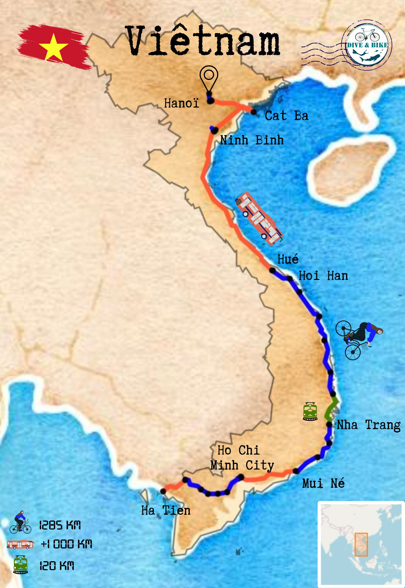
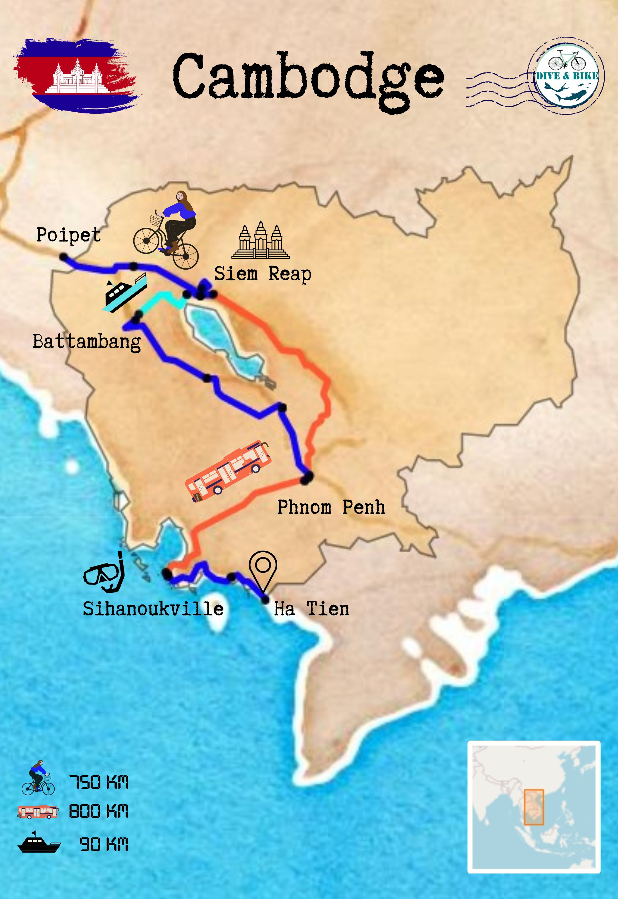
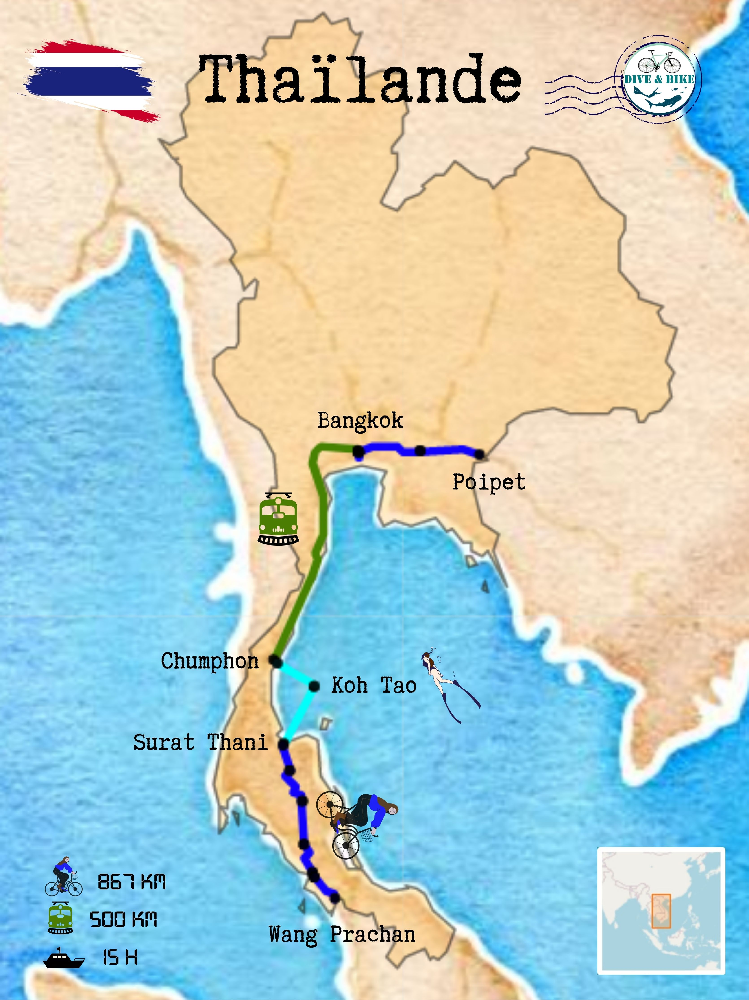
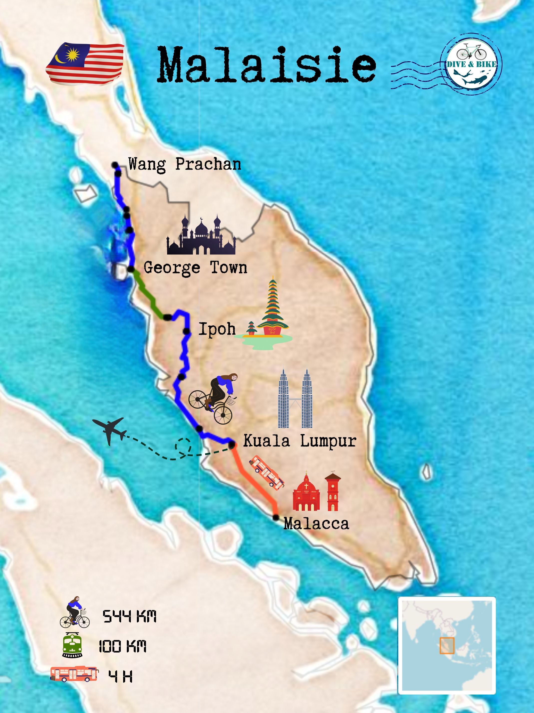
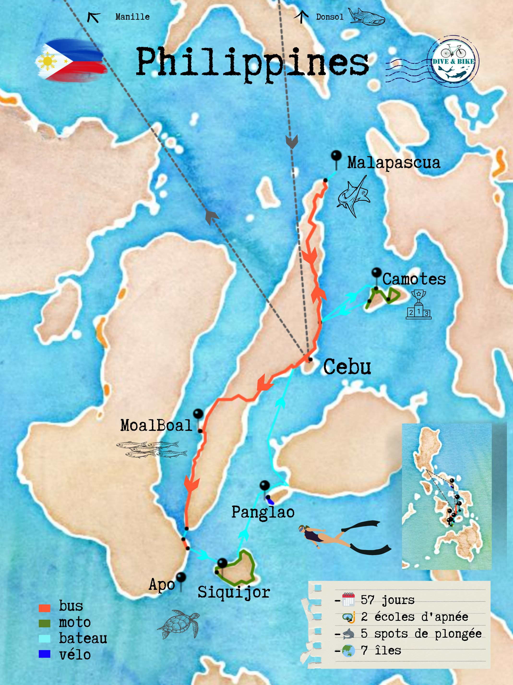

L'Asie du Sud-Est, une destination de rêve sur le papier. Mon rêve de plongeuse.
Ma première destination souhaitée en 2021. Frontières fermées, je me ballade au Mexique à la place. Le départ pour ce contient s'est finalement effectué fin octobre 2022.
Cinq pays traversés pendant six mois. 3 300km à la force des mollets.
Du Viêtnam à La Malaisie et par surprise Les Philippines, en traversant le Cambodge et la Thaïlande.
De Hanoï à Cebu en passant par Phnom Penh, Bangkok et Kuala Lumpur.
Des rizières aux plages paradisiaques en passant par les temples bouddhistes.
De la pluie, de la chaleur, de l'autoroute aux routes de terre rouge et aux petites routes.
Des coraux morts aux tortues et requins nourrices à porté de vue. Avec des conditions bien fluctuantes.
Bien plus excitée que la première grâce à la peur de l'inconnu bien plus faible et à l'envie de dépaysement bien plus forte.
L'aventure version asiatique à découvrir sur la vidéo suivante.

🚲 : 1 285 km en 14 étapes
🚐 : + 1000 km
🚃 : 100 km
🛥 : des dizaines
Découverte de ce bout d'Asie, de ce territoire qui fut un jour relié à la France, et aussi l'hypoglycémie, de la boue qui salit toutes mes affaires, des montées à 15% avec une humidité à 80%, des routes sans intérêt, d'une circulation oú il faut être concentré chaque seconde, d'un manque d'authenticité par un développement récent et si rapide de ce pays, pour le négatif.
Pour le positif, une autre culture, un autre rapport aux règles, de la nourriture trés fraîche partout, du café excellent, des gîtes et auberges si confortables et des plats diversifiés à très petits prix, des hôtes si amicaux, des bateaux paniers en bambou, des chapeaux typiques, des rencontres touchantes, des restaurants partout, des perles de paysages ici et là. Et être millionnaire (en dong)! (Et dépenser presque un million par jour).
Niveau langue, Google Traduction a été d'une grande aide. Parfois quatre vietnamiens et cette application ne suffisent pas pour faire comprendre que je voulais un café froid (j'ai eu un jus d'orange) et parfois juste donner ma gourde et la retrouver remplie de glaçons. Joie ultime ! Des échanges ici et là, au milieu de ferry ou autour d'une table pour des moments de partage grâce à la technologie.
Une de mes plus grandes fiertés de ce mois vietnamien est de n'avoir aucune égratignure due à la circulation. On m'avait prévenu mais de le vivre c'est un tout autre niveau. Un tout autre enfer. Un flux incessant de scooters. Un périphérique parisien en continue et en pire. Partout même en contre sens ! Des compteurs à chaque feu tricolore pour te dire quand ton heure va arriver. Sur les 1 285 kilomètres à pédaler, sûrement seulement 50 kilomètres sans avoir vu un véhicule. Même dans les chemins de terre perdus sur une île, un scooter peut débouler de n'importe où. Un vrai cauchemar !
Ne pas croire toutes ces belles photos, ce fut les tronçons les plus compliqués de cyclotourisme que j'ai pu faire. Physiquement et surtout mentalement.
Le combo pluie, trafic et route sans paysage a apporté beaucoup de questionnements, de découragement et de fatigue, mais la curiosité et l'envie de découvrir une autre façon de vivre l'ont toujours emporté.
.
Et aussi parce que le hasard a toujours amené des auberges si accueillantes, des rencontres et des bières quand cela gambergeait beaucoup trop. Les soirées à Vinh Ly, Bai Xep, Mui Né, Cao Lanh et My Tho resteront gravées.
.
La prochaine fois que je viens au Viêtnam, je ferai enfin comme tout le monde, je louerai une moto.
Effectivement, c'est sûrement le meilleur moyen pour se déplacer dans ce pays si dynamique. Et si vivant.

🚲 : 750km en 9 étapes (sur 2075km)
🚐 : 800 km
🛥 : 90 km (6h)
Cambodge, pays connu pour les temples d'Angkor. De nombreux touristes n'y viennent que pour ça. Pour cause, cette merveille est fabuleuse.
Mais découvrir aussi la vie des cambodgiens me restera gravée. Ce peuple avec une histoire si tragique (et si récente) m'a bouleversée par tous ces sourires. Le fait d'être plongée une semaine dans un village n'y est sûrement pas étranger.
Méconnaissance absolue de ce pays modeste avant, je n'en resors pas indifférente. Les séquelles du pays le plus bombardé au monde et qui s'est entretué sont encore présentes. Un pays jeune où les enfants sont partout.
Niveau vie actuelle, deux monnaies s'y mélangent, le riel et le dollar. Les prix sont souvent indiqués en dollar, mais possible de payer en riel avec un multiple de 4000 et on peux te rendre la monnaie avec un mélange de dollars et de riels. De quoi donner des nœuds au cerveau.
Niveau nourriture, le riz est roi. Agrémenté de porc, de poisson, de poulet et surtout de gingembre.
Ce pays peu grand a permis des longues pauses, soit au bord de la mer, soit dans la capitale, soit à la campagne. Avec par endroit des villages flottants qui apparaissent.
Abus de soleil, abus de riz et abus de poussière dans ce pays si plat au centre. Et abus de moustiques dont un m'a transmis la dengue. Sacré moustique tigre qui a fait deux victimes en une soirée.
Peu de kilomètres à vélo mais tellement de moments partagés avec des cambodgiens, italiens, canadiens, français, anglais et avec mes amis suisses.
Cambodge, tu resteras pour moi une terre d'échange.

🚲 : 867 km en 7 étapes et des balades (sur 2800km)
🤿🐢🦈: 5 semianes d'apnée à Koh Tao
La Thaïlande se résume à Bangkok, à Koh Tao et à 7 jours de cyclotourisme.
Il y avait tellement d'autres options, le nord et ses montagnes, ses temples colorés, Krabi et ses falaises. Tellement de lieux à découvrir en 45 + 30 jours de visa.
Mais le choix fut de rester 5 semaines à Koh Tao. Cette ile fut la première raison de mes voyages. Il y a 3 ans quand l'envie de voyager me vient, l'idée était de partir 3 mois sur cette île pour devenir instructrice de plongée bouteille. Une île dédiée à la plongée dont je n'avais effleurée que les côtes lors de vacances précédentes.
Un livre me donne envie de pédaler en Asie avant d'arriver à Koh Tao. Trois mois de voyage à vélo en Asie puis trois mois en Thaïlande. C'était le plan initial. C'est ainsi que Dive&Bike est né.
Covid et x vagues de confinement ont fermé les frontières de ce plan.
Remplacé par le Mexique et l'apnée où la liberté était bien plus facile. Les deux m'ont créé mes plus beaux souvenirs ces dernières années. Aucun regret, outsiders de luxe.
Trois ans plus tard, je réalise ce projet dont je ne croyais plus. Avec des variations, la bouteille de plongée est bien trop lourde sur le vélo, alors c'est l'apnée qui me retient à Koh Tao. Au paradis des tortues.
Par la suite, les quelques jours de vélo ont confirmé le statut de paradis de cyclotouristes. Il suffit de comprendre qu'il faut prendre les routes avec le plus de chiffres possibles et traverser les parcs nationaux pour que les yeux restent grands ouverts. Un enchantemrnt permanent avec une population si accueillante.
51 journées dans ce pays agrémentées de partage et de couchers de soleil sublimes, ce fut si court et si long.
Il va falloir que je revienne un jour pour découvrir ces montagnes au nord et ses fonds marins à l'est.
Thaïlande, tu as rempli ma boîte à souvenirs de belles pépites.

🚲 : 544km en 7 étapes (sur 3 300km 🏁)
🚂 : 100km (les seuls autorisés avec un vélo)
🚍 : 340km
Un pays complètement inattendu.
À majorité musulmane, et des minorités indiennes et chinoises aussi très majoritaires. Une belle diversité de cultures se mélange dans ce pays.
Une crainte que mes habits d'été féminins soient mal perçus entre toutes ces femmes voilées. Au contraire, la diversité est si forte que l'acceptation des différences semble normale.
Cependant, ils ont oublié de faire une place sur la route pour les vélos. Parmi tous ces nombreux voitures et camions, Fridalo (mon vélo) s'est bien senti exclu.
Mais la mixité de batiments historiques et de bâtiments bien plus modernes, le charme a grandement opéré. Un plaisir de s'y balader (à pied).
Il y avait aussi ce gardien de vélo, car c'est quand @littlemisspedals me donne le contact de son frère habitant à Kuala Lumpur, que les Philippines sont devenus possibles.
Grâce â ça, le vélo est resté sous haute surveillance pendant 2 mois.
Obligation d'une escale de 5 jours pour le récupérer. Cette fois-ci, inverser les rôles et avoir le grand privilège d'être la gardienne de son appart avec vue sur Kuala Lumpur. Après avoir partagé des chambres à 8, avoir un 80m² rien qu'à moi était un beau cadeau de fin de voyage.
Le temps de se prélasser sur le canapé fut bien court, c'était mission à la recherche d'un carton pour que Fridalo puisse prendre l'avion confortablement. Surtout lorsque les slaloms entre les éclairs et la pluie qui a deferlé ont éte quotidiens.
Heureusement que Décathlon est implanté dans chaque grande ville.
Après cette mission achevée, il restait juste le temps d'aller explorer Malacca. Ville historiquement importante. Est-ce sûrement la lecture de la bio de Magellan qui m'a donné l'envie de galérer dans les cars malais pour découvrir cette ville à 2h de Kuala Lumpur.
Ou l'envie de me prendre hors de la capitale des trombes d'eau.
Mais Malacca est à l'image malaise, maisons chinoises, temples à chaque coin de rue, diversité de visages, rues propres et un street market truffé de street food avec en bonus une rivière et des ruines symboles de cet ancien port. Je suis encore tombée sous le charme.
La Malaisie offre trois mois de visa pour chaque arrivée. Je n'aurais jamais douté de ce charme. Il aurait mérité que ces îles à l'est, que cette forêt centrale, que ces ourangs outang soient explorés avec ce long visa.
Mais le vélo s'est fait emballé, et la toute destination de ce voyage est à portée d'avion.

🤿 : 2 écoles d'apnée dont une compétitin
🦈 : 5 spots de plongée
🌏 : 7 îles visitées
Après quatre mois d'Asie du Sud-Est principalement pour pédaler, il a bien fallu rattraper la partie plongée. Ainsi objectif de deux mois de palmage aux Philippines.
Les Philippines resteront avec une saveur amère. Ce qui devait être deux mois sans questionnement n'a été que prise de décisions sans réel but précis, ni destination.
Tout d'abord, perdre ma liberté de voyageuse a été bien trop perturbant pendant le premier mois. Une énorme désillusion qui a emprisonné l'esprit dans du négatif.
Puis chambouler la stratégie initiale et voir de mes propres yeux ce pays des îles. Ce pays parfait pour l'apnée.
Île après Île, changer les plans pour regagner ces libertés perdues. Avec pour seul adversaire, mon mental.
Sept îles visitées au final, sept îles avec la mer à portée de palmes.
Un énorme coup de cœur pour l'île authentique de Camotes, sûrement parce que c'est la première qui m'a rendu ma liberté de déplacement avec des conditions incroyables pour pratiquer l'apnée. Entourée d'une belle bande d'athlètes de haut niveau.
Siquijor restera gravée aussi par ses fonds marins merveilleux.
Des Philippines, je garderai en plus l'image de ces tricycles colorés (partout), de toutes ces motos en passagère, à 3, avec tous mes bagages, ou en conductrice, de ces fiestas (fêtes locales) dans un champs ou dans un terrain de basket, de ce rhum local bien trop ennivrant, de ces pains à 5 pesos, de ces milliers de poissons à contempler, de ces coraux si colorés, de cette chaleur écrasante, de ces sunsets bien plus roses (et sublimes) qu'ailleurs.
L'image aussi de tous ces Philippins rencontrés, de ces locaux qui m'ont ouvert les portes de leur trésors, de ces nombreux jeunes qui travaillent en remote pour l'étranger et voyagent dans leur propre pays. Car leur anglais est parfait. Et leur position géographique leur permet de travailler pour l'Amérique, l'Europe ou l'Australie.
Sans réelle barrière de la langue, les échanges ont été si nombreux. Si généreux.
Mais l'éphémère de ces rencontres, de ces instants solos, de ces paysages paradisiaques se sont fait tromper par une envie de retour.
Ça parlait bien de liberté dès le début.
Parce que c'est en apprenant il y a des années à perdre des libertés que j'ai construit pierre après pierre la mienne. Toutes les libertés ont été prises.
La partie est finie.
Carte dynamique de toutes les traces GPS et tous les spots de plongée, d'apnée et de snorkeling réalisés lors de ce voyage.
Pour les prochains voyageurs:
- éviter la route 1 au Viêtnam et privilégier le Ho Chi Minh Trail
- aimer les longues lignes droites au Cambodge et les pubs de bière qui inondent les routes,
- aimer se perdre dans les routes avec de nombreux numéros en Thaïlande (signe de départementale) et se retrouver au milieu de falaises,
- aimer se frotter aux camions en Malaisie pour voir défiler des temples de toutes les réligions à chaque virage,
- aimer négocier les tuk-tuk aux Philippines (à diviser par 4 sur les îles touristiques).
(Cliquez sur les points pour avoir les liens sur le blog ou sur les traces)
Des rencontres au fil de la route ou des centres d'apnée où j'aurais pu y rester une vie.